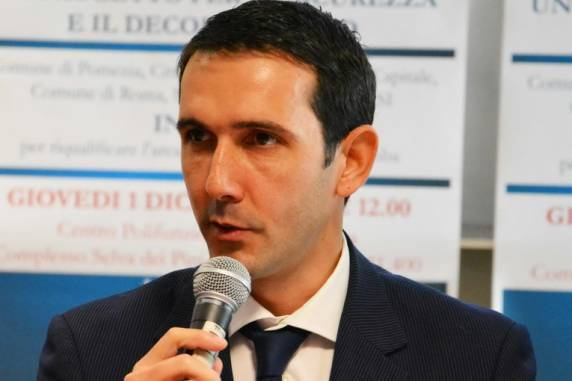

La mia intervista a "Il Pontino" - n. 11 Giugno 2026
Sono stato intervistato da "Il Pontino" e la pubblicazione è avvenuta sul numero 11 (periodo 1/15 Giugno 2026). Allego qui…

Sono stato intervistato da "Il Pontino" e la pubblicazione è avvenuta sul numero 11 (periodo 1/15 Giugno 2026). Allego qui…

Nel settembre 2025 sono stato intervistato da Il Clandestino Giornale per fare il punto sulla situazione politica di Pomezia. A…
Sono stato intervistato da "Il Pontino" e la pubblicazione è avvenuta sul numero 11 (periodo 1/15 Giugno 2026). Allego qui…

In queste giornate di caldo intenso mi ero ripromesso di tornare a commentare la situazione politica di Pomezia. Sarebbe stata…
Se vuoi scrivermi puoi contattarmi su Facebook o Instagram, commentare sotto i miei post o inviarmi un'email a questo indirizzo.